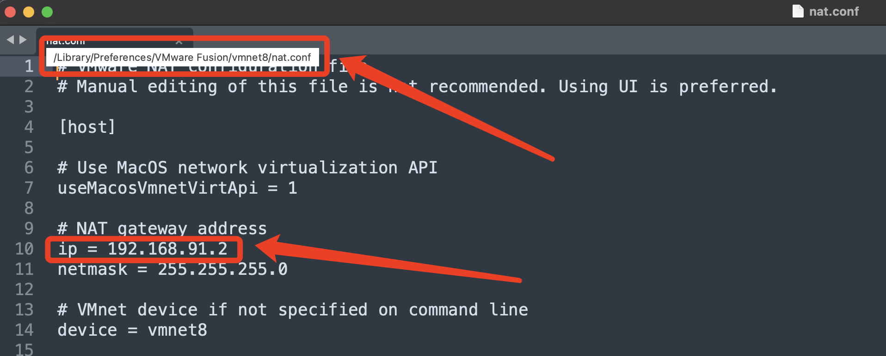
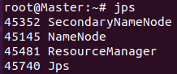
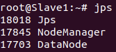
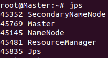
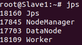
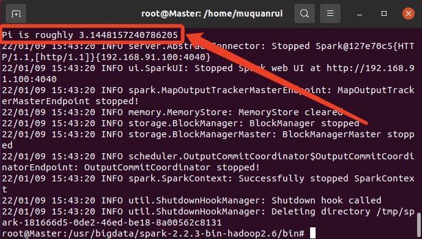

1 Environment introduction
System environment:
- Host operating system: macOS Big Sur 11.6.1
- Hypervisor: VMware Fusion 12 Pro 12.2.1
- Virtual machine operating system: Ubuntu 20.04.3
Running environment:
- jdk-8u201-linux-x64
- scala-2.11.8
- hadoop-2.6.5
- spark-2.2.3-bin-hadoop2.6
They have been uploaded to Google Drive.
2 Network settings
First, VMWare sets the virtual machine network to NAT.
Check the gateway of the local virtual network card where VMWare uses NAT:

Cluster network planning:
| IP adress | Host name |
|---|---|
| 192.168.91.100 | Master |
| 192.168.91.101 | Slave1 |
| 192.168.91.102 | Slave2 |
Therefore, we treat the current virtual machine as the Master.
First set its IP address:
cd /etc/netplan/
sudo gedit 01-network-manager-all.yaml # If it does not exist, you can create a new oneEdit and save:
# Let NetworkManager manage all devices on this system
network:
ethernets:
ens33: # name of the configured network card
addresses: [192.168.91.100/24] # static ip address and netmask
dhcp4: no # close DHCP
optional: true
gateway4: 192.168.91.2 # gateway
nameservers:
addresses: [223.5.5.5]
version: 2
renderer: NetworkManagerEnable new configuration:
sudo netplan applyIf you need to change the DNS server, sudo gedit /etc/resolv.conf, edit and save:
nameserver 223.5.5.5Modify hostname, sudo gedit /etc/hostname, edit and save:
MasterChange the mapping of IP address to host name, sudo gedit /etc/hosts, add and save:
192.168.91.100 Master
192.168.91.101 Slave1
192.168.91.102 Slave2Make the modified mapping take effect:
source /etc/hostsReboot to make the modified hostname take effect.
3 Java installation
cd /usr
mkdir bigdata
cd bigdata
mv /home/muquanrui/Desktop/jdk-8u8201-linux-x64.tar.gz .
sudo tar -zxvf jdk-8u8201-linux-x64.tar.gz4 Scala installation
In the directory /usr/bigdata:
mv /home/muquanrui/Desktop/scala-2.11.8.tgz .
sudo tar -zxvf scala-2.11.8.tgz5 Hadoop installation
In the directory /usr/bigdata:
mv /home/muquanrui/Desktop/hadoop-2.6.5.tar.gz .
sudo tar -zxvf hadoop-2.6.5.tar.gz6 Spark installation
In the directory /usr/bigdata:
mv /home/muquanrui/Desktop/spark-2.2.3-bin-hadoop2.6.tgz .
sudo tar -zxvf spark-2.2.3-bin-hadoop2.6.tgz7 Environment variable configuration
Open the configuration file gedit /etc/profile, add and save:
export JAVA_HOME=/usr/bigdata/jdk1.8.0_201
export CLASSPATH=:$JAVA_HOME/lib:$JAVA_HOME/jre/lib:$CLASSPATH
export PATH=$JAVA_HOME/bin:$JAVA_HOME/jre/bin:$PATH
export SCALA_HOME=/usr/bigdata/scala-2.11.8
export PATH=$PATH:$SCALA_HOME/bin
export HADOOP_HOME=/usr/bigdata/hadoop-2.6.5
export PATH=$PATH:$HADOOP_HOME/bin:$HADOOP_HOME/sbin
export SPARK_HOME=/usr/bigdata/spark-2.2.3-bin-hadoop2.6/
export PATH=$PATH:$SPARK_HOME/bin:$SPARK_HOME/sbinMake the change take effect:
source /etc/profileTest if it works:
java -version
scala -version8 Hadoop environment configuration
Create tmp and hdfs file directories：
cd /usr/bigdata/hadoop-2.6.5/
mkdir tmp
mkdir hdfs
mkdir hdfs/name
mkdir hdfs/dataThe configuration files to be modified next:
- hadoop-env.sh: BASH script, configure the environment variables needed to run Hadoop, configure the Java path here.
- slaves: configure the slave node, which can be the host name or IP address. The file name in the version 3.x of Hadoop may be workers, but the old version 2.x is slaves.
- core-site.xml: configuration items of Hadoop Core, such as HDFS, MapReduce and YARN commonly used I/O settings, etc.
- hdfs-site.xml: configuration items of the Hadoop daemon, including namenode, auxiliary namenode and datanode, etc.
- maprd-site.xml: configuration items of the MapReduce daemon, including the job history server.
- yarn-site.xml: configuration items of YARN daemon, including resource manager, web application proxy server and node manager.
Go to the directory where all the configuration and script files are located:
cd /usr/bigdata/hadoop-2.6.5/etc/hadoop/gedit hadoop-env.sh, edit JAVA_HOME:
export JAVA_HOME=/usr/bigdata/jdk1.8.0_201gedit slaves, delete the content (localhost maybe), add:
Slave1
Slave2gedit core-site.xml, replace<configuration></configuration> with:
<configuration>
<property>
<name>fs.defaultFS</name>
<value>hdfs://Master:9000</value>
</property>
<property>
<name>io.file.buffer.size</name>
<value>131072</value>
</property>
<property>
<name>hadoop.tmp.dir</name>
<value>/usr/bigdata/hadoop-2.6.5/tmp</value>
</property>
</configuration>gedit hdfs-site.xml, replace<configuration></configuration> with:
<configuration>
<property>
<name>dfs.namenode.secondary.http-address</name>
<value>Master:50090</value>
</property>
<property>
<name>dfs.replication</name>
<value>2</value>
</property>
<property>
<name>dfs.namenode.name.dir</name>
<value>file:/usr/bigdata/hadoop-2.6.5/hdfs/name</value>
</property>
<property>
<name>dfs.datanode.data.dir</name>
<value>file:/usr/bigdata/hadoop-2.6.5/hdfs/data</value>
</property>
</configuration>Copy mapred-site.xml.template to generate xml:
cp mapred-site.xml.template mapred-site.xmlgedit mapred-site.xml, replace<configuration></configuration> with:
<configuration>
<property>
<name>mapreduce.framework.name</name>
<value>yarn</value>
</property>
<property>
<name>mapreduce.jobhistory.address</name>
<value>Master:10020</value>
</property>
<property>
<name>mapreduce.jobhistory.address</name>
<value>Master:19888</value>
</property>
</configuration>gedit yarn-site.xml, replace<configuration></configuration> with:
<configuration>
<property>
<name>yarn.nodemanager.aux-services</name>
<value>mapreduce_shuffle</value>
</property>
<property>
<name>yarn.resourcemanager.address</name>
<value>Master:8032</value>
</property>
<property>
<name>yarn.resourcemanager.scheduler.address</name>
<value>Master:8030</value>
</property>
<property>
<name>yarn.resourcemanager.resource-tracker.address</name>
<value>Master:8031</value>
</property>
<property>
<name>yarn.resourcemanager.admin.address</name>
<value>Master:8033</value>
</property>
<property>
<name>yarn.resourcemanager.webapp.address</name>
<value>Master:8088</value>
</property>
</configuration>9 Spark environment configuration
Go to the directory where all the configuration and script files are located:
cd /usr/bigdata/spark-2.2.3-bin-hadoop2.6/conf/Copy spark-env.sh.template to generate sh:
cp spark-env.sh.template spark-env.shgedit spark-env.sh, add:
export JAVA_HOME=/usr/bigdata/jdk1.8.0_201
export SCALA_HOME=/usr/bigdata/scala-2.11.8
export HADOOP_HOME=/usr/bigdata/hadoop-2.6.5
export SPARK_MASTER_IP=192.168.91.100
export SPARK_MASTER_PORT=7077
export SPARK_MASTER_HOST=192.168.91.100
export SPARK_LOCAL_IP=192.168.91.100
export SPARK_WORKER_MEMORY=1g
export HADOOP_CONF_DIR=/usr/bigdata/hadoop-2.6.5/etc/hadoopCopy slaves.template to generate slaves:
cp slaves.template slavesgedit slaves, delete the content (localhost maybe), add:
Slave1
Slave2In the case that both Hadoop and Spark are added to the environment variables, in order to avoid script conflicts (for example, the two sbins have start-all.sh for startup), we can copy and modify the script name.
Go to the directory where the script files are located:
cd /usr/bigdata/spark-2.2.3-bin-hadoop2.6/sbin/
cp start-all.sh start-spark.sh
cp stop-all.sh stop-spark.sh10 Clone the virtual machine
Use VMWare to clone two virtual machines Slave1 and Slave2 (via method link).
Set up network, refer to Part 2:
- Modify the IP addresses to: 192.168.91.101, 192.168.91.102.
- Modify the host names to: Slave1, Slave2.
Modify the field SPARK_LOCAL_IP in Spark configuration file spark-env.sh to its host name or IP address.
11 Password-free SSH configuration
Install SSH on three virtual machines and execute the command once on each machine:
sudo apt-get install openssh-serverModify the root user password of every virtual machine:
sudo passwd root
# enter password for current user
# enter root password which you want to set (ex. root)
# repeat passwordModify the SSH settings of the three virtual machines to allow root users to log in:
sudo gedit /etc/ssh/sshd_config- Modify the line starting with
#PermitRootLogintoPermitRootLogin yes
Generate a public key and private key pair on each machine:
su root
cd /root/.ssh # If the .ssh directory does not exist, create it manually
ssh-keygen -t rsaOn the machine Master, add the public key to itself, Slave1 and Slave2:
ssh-copy-id -i /root/.ssh/id_rsa.pub Master
ssh-copy-id -i /root/.ssh/id_rsa.pub Slave1
ssh-copy-id -i /root/.ssh/id_rsa.pub Slave2When copying the pulic key, a password is required to log in, that is, the root user password on these machines that has just been set.
On the machine Master, test whether you can log in to Slave1 and Slave2 without a password.
ssh Slave1
ssh Slave212 Start the cluster and test
First start Hadoop on the Master node, and the namenode needs to be formatted before the first start:
hadoop namenode -format
hdfs namenode -formatStart Hadoop on the Master node: (the command’s upper directory is added to the environment variable and it can be used anywhere)
start-all.shUse command jps to check if the startup is successful, on Master node:

And on Slave nodes:

Start Spark on the Master node: (the command’s upper directory is added to the environment variable and it can be used anywhere)
start-spark.shUse command jps to check if the startup is successful, on Master node:

And on Slave nodes:

Run an example program on the Master node:
cd /usr/bigdata/spark-2.2.3-bin-hadoop2.6/bin/
run-example org.apache.spark.examples.SparkPiAfter a few seconds, you can see that the result has appeared:

Shut down Spark and Hadoop:
stop-spark.sh
stop-all.sh最后更新： 2023年01月01日 19:27